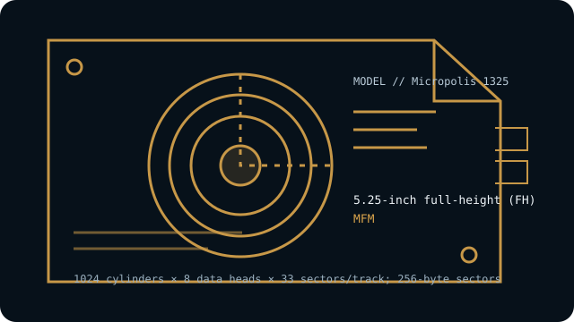

[ INDIVIDUAL COMPONENT // HARD DISK DRIVES ]
Micropolis 1325
69 MB formatted 5.25-inch full-height MFM drive using an eight-head ST-506 geometry. This entry describes the named model, not every drive with similar markings.

IDENTIFICATION: Record the complete label, suffix, revision and controller details before handling. Do not substitute a related model’s geometry or encoding based on appearance alone.
Model specifications
| Exact model | Micropolis 1325 |
|---|---|
| Catalog classification | MFM and early magnetic drives |
| Capacity | 69 MB formatted (85 MB unformatted in the model listing) |
| Form factor | 5.25-inch full-height (FH) |
| Interface | ST-506-compatible, separate 34-pin control and 20-pin data cables |
| Recording method | MFM |
| Drive geometry | 1024 cylinders × 8 data heads × 33 sectors/track; 256-byte sectors |
| Host-controller compatibility | Requires an MFM ST-506 controller with support for 1024 cylinders and eight heads, the correct 33-sector/256-byte geometry and sufficient capacity; also verify cable, drive-select and termination settings. Early host BIOS type tables may need a controller BIOS or software translation. |
| Historical caveat | The model listing gives 69 MB formatted and 85 MB unformatted; these are different capacity measures, not competing formatted-capacity claims. Verify the 1024/8/33 geometry and 256-byte sectors from product documentation rather than inferring them from physical appearance. |
Host-controller compatibility
Requires an MFM ST-506 controller with support for 1024 cylinders and eight heads, the correct 33-sector/256-byte geometry and sufficient capacity; also verify cable, drive-select and termination settings. Early host BIOS type tables may need a controller BIOS or software translation.
- Confirm the full model and revision on the label, controller make/model, cable pinouts, power requirements, drive-select jumpers, and termination before connection.
- Verify that the controller supports the exact encoding, CHS geometry and sector size shown above; controller and BIOS translations can vary between systems.
- Do not attach this drive directly to modern SATA, IDE/ATA, SCSI or USB ports. Any bridge must explicitly support the legacy ST-506/ST-412 signaling and drive format; connector resemblance is not electrical compatibility.
Historical and preservation notes
The Micropolis 1325 was also used in OEM/relabelled systems, so a DEC or integrator label may obscure the original drive model. Verify the underlying manufacturer label and the controller’s exact geometry before operation.
These drives are decades old. If data matters, avoid exploratory low-level formatting, repeated power cycling or writes; preserve the original controller settings and seek qualified recovery help for a failing mechanism. Treat any catalog capacity as approximate until the original manual and host configuration are checked.
Sources & further reading
- Micropolis 1325 official product/support specificationsManufacturer product specifications for the Micropolis 1325 family.
- Micropolis 1325 model geometry and setupIndependent model listing with MFM/ST-506 CHS and setup details.
- Micropolis 1325 technical document (archival scan)Scanned model document for cross-checking individual revision markings.
Use the model-specific documentation for the full label and revision. Third-party archival listings are useful cross-references but may summarize a family or use rounded capacity values.